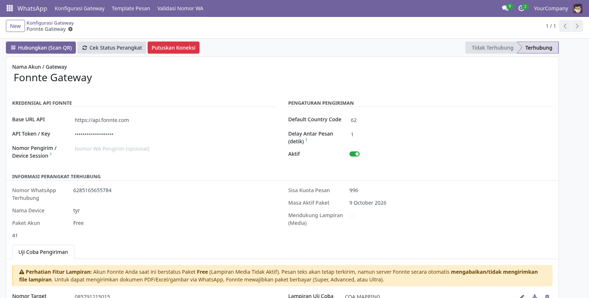
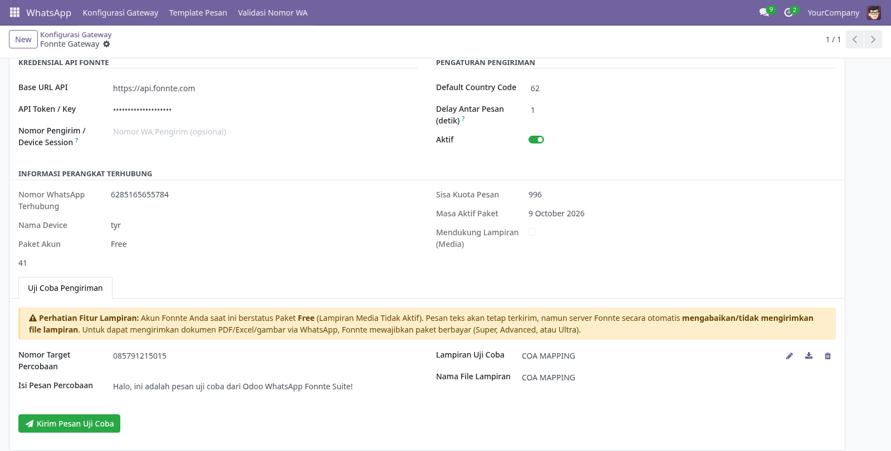
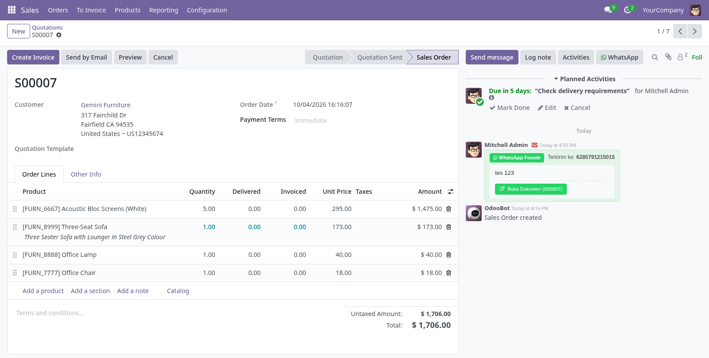
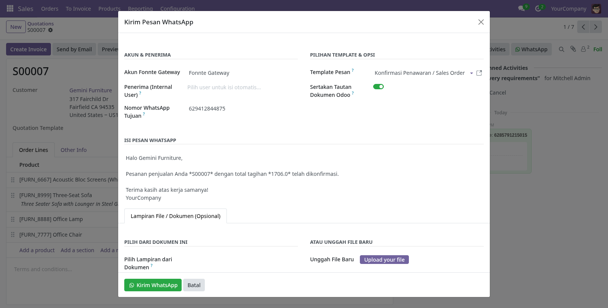

Integrasi Resmi Fonnte WhatsApp Gateway pada Chatter Dokumen Odoo 18
Odoo 18 Community & Enterprise ReadyKirim pesan WhatsApp langsung dari form dokumen apa pun (Sales Order, Invoice, PO, Stock Picking) cukup dengan satu klik di samping tombol Activities.
Mendukung pengiriman file PDF faktur atau dokumen gambar melalui direct multipart binary upload yang bekerja sempurna di server lokal maupun cloud.
Pantau status device, sisa kuota, dan masa aktif paket Fonnte secara langsung, serta validasi nomor pelanggan apakah terdaftar di WhatsApp.
Buat template pesan fleksibel menggunakan variabel Odoo seperti {{self.name}} dan {{self.partner_id.name}}.
Modul ini menggunakan layanan gateway pihak ketiga tidak resmi (Unofficial API via Fonnte.com). Pengembang modul TIDAK BERTANGGUNG JAWAB atas segala bentuk pemblokiran nomor (banned / suspend), laporan spam dari penerima, atau pembatasan akun WhatsApp oleh Meta Inc.
Pengguna bertanggung jawab penuh atas etika dan kepatuhan nomor yang didaftarkan. Dilarang keras melakukan spamming atau broadcast ke nomor tanpa persetujuan (opt-in).



